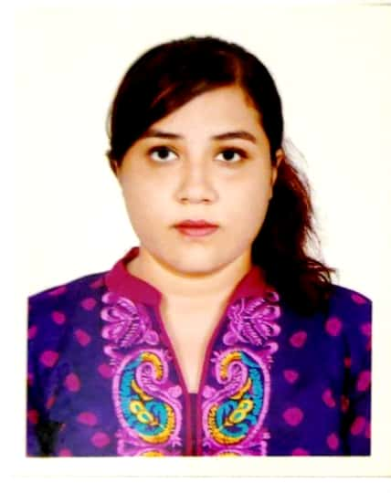
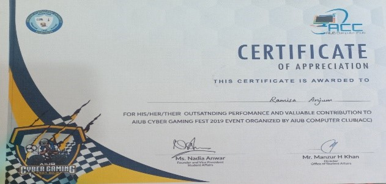
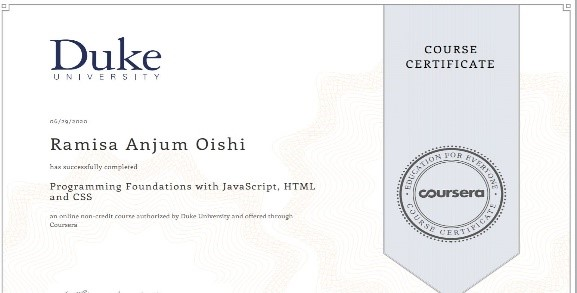

| Enclosure | Certificates |
|---|---|
| Address | Padmakanon Road, House no: 97/18, South Basaboo, Dhaka-1214 |
| anjumramisa930@gmail.com | |
| Phone | 019******** |
| Date of birth | 17/04/1992 |
| Degree | Subject | Name of Institution | Grade | Passing Year | |
|---|---|---|---|---|---|
| SSC | Science | Motijheel Model High School and college | 5.00 | 2016 | |
| HSC | Science | Shiddeshwari Girls College | 4.00 | 2018 | |
| BSc | Computer Science and Software Engineering | American International University-Bangladesh | 3.59 | Jan 2019 |
| Works | Certificates or Links |
|---|---|
| 1.5 years experienced as a Web Developer in Xyz Company |
|
| Worked as a web developer on universitie's club events websites |
 |
| Complete web developing course on online platform Coursera |
 |
| Worked on lots of academic and non-academic projects |
Git_hub Linked_in |
| Serial No | Type of skills |
|---|---|
| 1 | Familier with all the content of C, C++, JAVA, C#, SQL, Python |
2 | Expert on html |
| 3 | Expert on XML |
| 4 | Expert on javascript, PHP |
| Travelling |
| Reading Books |
| Websites developing |